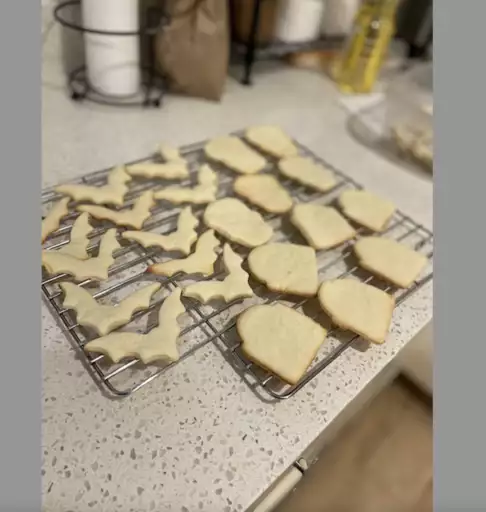

Sugar Cookies

This is a meal fit for a king try at your own discresion.
Ingredients
- 1 ½ cups butter, softened
- 2 cups white sugar
- 4 eggs
- 1 teaspoon vanilla extract
- 5 cups all-purpose flour
- 2 teaspoons baking powder
- 1 teaspoon salt
Steps
- Cream together butter and sugar in a large bowl with an electric mixer until smooth. Beat in eggs and vanilla. Stir in flour, baking powder, and salt. Cover, and chill dough for at least 1 hour (or overnight).
- Preheat oven to 400 degrees F (200 degrees C).
- Lightly dust a work surface with flour. Roll out dough to 1/4 to 1/2 inch thickness. Cut into shapes with any cookie cutter. Place cookies 1 inch apart on ungreased baking sheets.
- Bake in the preheated oven until cookies are lightly browned, 6 to 8 minutes. Carefully transfer cookies to a wire rack and cool completely before decorating.